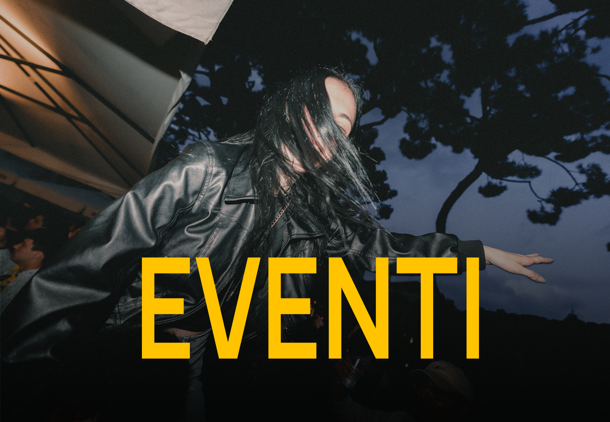
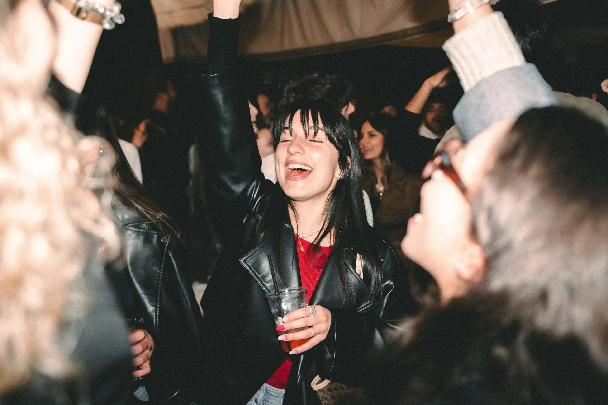
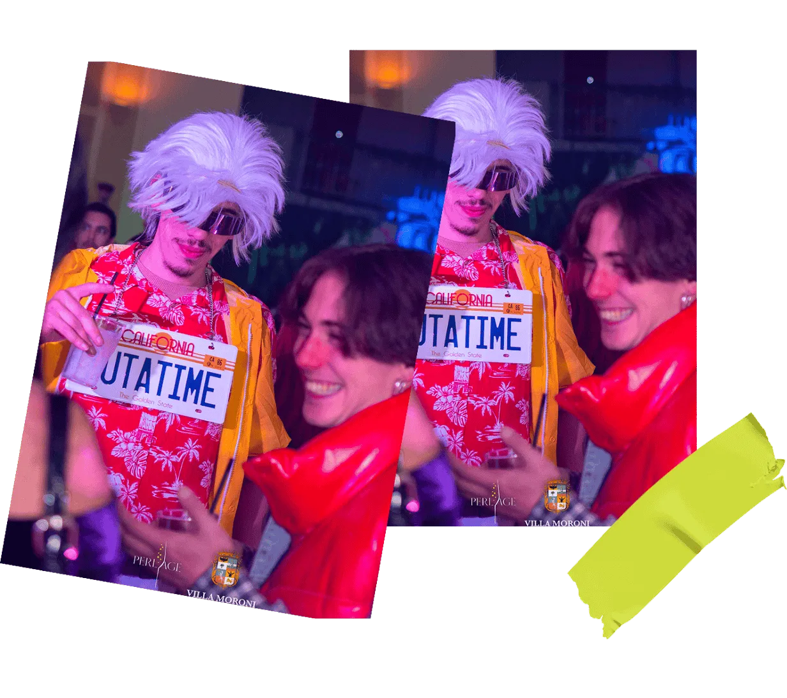

Catturare un evento non significa solo premere REC: significa essere nel posto giusto al momento giusto, anticipare le emozioni, valorizzare ogni istante. Dalla preparazione fino all’ultima luce in sala, il nostro lavoro è trasformare l’energia dal vivo in contenuti autentici che rimangano impressi e si facciano condividere.